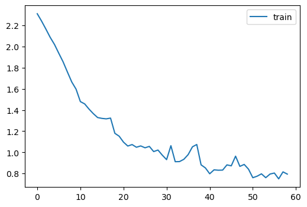
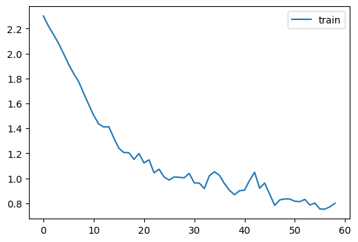
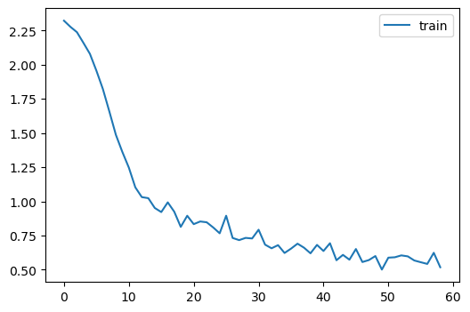
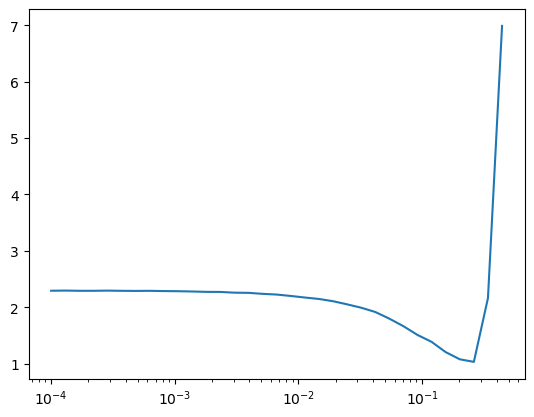
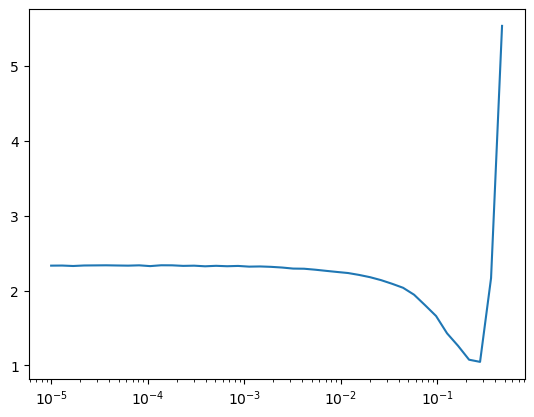
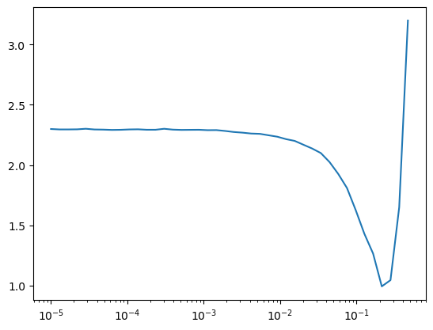

import matplotlib as mpl
import torchvision.transforms.functional as TF
from contextlib import contextmanager
from torch import nn,tensor
from datasets import load_dataset,load_dataset_builder
from miniai.datasets import *
from miniai.conv import *
import logging
from fastcore.test import test_closeThis is not my content it’s a part of Fastai’s From Deep Learning Foundations to Stable Diffusion course. I add some notes for me to understand better thats all. For the source check Fastai course page.
Learner, the most important so far! First experiment everything and second understand decorators. (real python stuff). keys: learning rate scheduler,learning rate finder, callback, metrics
check the lesson 16 before check the code
Basic Callbacks Learner is done in lesson 16. much more gradual explanation there.
::: {.cell 0=‘e’ 1=‘x’ 2=‘p’ 3=‘o’ 4=‘r’ 5=‘t’}
import math,torch,matplotlib.pyplot as plt
import fastcore.all as fc
from collections.abc import Mapping
from operator import attrgetter
from functools import partial
from copy import copy
from torch import optim
import torch.nn.functional as F
from miniai.conv import *
from fastprogress import progress_bar,master_bar:::
torch.set_printoptions(precision=2, linewidth=140, sci_mode=False)
torch.manual_seed(1)
mpl.rcParams['image.cmap'] = 'gray'logging.disable(logging.WARNING)Learner
x,y = 'image','label'
name = "fashion_mnist"
dsd = load_dataset(name)@inplace
def transformi(b): b[x] = [torch.flatten(TF.to_tensor(o)) for o in b[x]]bs = 1024
tds = dsd.with_transform(transformi)dls = DataLoaders.from_dd(tds, bs, num_workers=4)
dt = dls.train
xb,yb = next(iter(dt))
xb.shape,yb[:10](torch.Size([1024, 784]), tensor([5, 4, 9, 4, 3, 0, 6, 5, 7, 6]))class Learner:
def __init__(self, model, dls, loss_func, lr, opt_func=optim.SGD): fc.store_attr()
def one_batch(self):
self.xb,self.yb = to_device(self.batch)
self.preds = self.model(self.xb)
self.loss = self.loss_func(self.preds, self.yb)
if self.model.training:
self.loss.backward()
self.opt.step()
self.opt.zero_grad()
with torch.no_grad(): self.calc_stats()
def calc_stats(self):
acc = (self.preds.argmax(dim=1)==self.yb).float().sum()
self.accs.append(acc)
n = len(self.xb)
self.losses.append(self.loss*n)
self.ns.append(n)
def one_epoch(self, train):
self.model.training = train
dl = self.dls.train if train else self.dls.valid
for self.num,self.batch in enumerate(dl): self.one_batch()
n = sum(self.ns)
print(self.epoch, self.model.training, sum(self.losses).item()/n, sum(self.accs).item()/n)
def fit(self, n_epochs):
self.accs,self.losses,self.ns = [],[],[]
self.model.to(def_device)
self.opt = self.opt_func(self.model.parameters(), self.lr)
self.n_epochs = n_epochs
for self.epoch in range(n_epochs):
self.one_epoch(True)
with torch.no_grad(): self.one_epoch(False)m,nh = 28*28,50
model = nn.Sequential(nn.Linear(m,nh), nn.ReLU(), nn.Linear(nh,10))learn = Learner(model, dls, F.cross_entropy, lr=0.2)
learn.fit(1)0 True 1.1753063802083332 0.5986166666666667
0 False 1.1203783482142857 0.6133857142857143Basic Callbacks Learner
::: {.cell 0=‘e’ 1=‘x’ 2=‘p’ 3=‘o’ 4=‘r’ 5=‘t’}
class CancelFitException(Exception): pass
class CancelBatchException(Exception): pass
class CancelEpochException(Exception): pass:::
::: {.cell 0=‘e’ 1=‘x’ 2=‘p’ 3=‘o’ 4=‘r’ 5=‘t’}
class Callback(): order = 0:::
::: {.cell 0=‘e’ 1=‘x’ 2=‘p’ 3=‘o’ 4=‘r’ 5=‘t’}
def run_cbs(cbs, method_nm, learn=None):
for cb in sorted(cbs, key=attrgetter('order')):
method = getattr(cb, method_nm, None)
if method is not None: method(learn):::
class CompletionCB(Callback):
def before_fit(self, learn): self.count = 0
def after_batch(self, learn): self.count += 1
def after_fit(self, learn): print(f'Completed {self.count} batches')cbs = [CompletionCB()]
run_cbs(cbs, 'before_fit')
run_cbs(cbs, 'after_batch')
run_cbs(cbs, 'after_fit')Completed 1 batchesclass Learner():
def __init__(self, model, dls, loss_func, lr, cbs, opt_func=optim.SGD): fc.store_attr()
def one_batch(self):
self.preds = self.model(self.batch[0])
self.loss = self.loss_func(self.preds, self.batch[1])
if self.model.training:
self.loss.backward()
self.opt.step()
self.opt.zero_grad()
def one_epoch(self, train):
self.model.train(train)
self.dl = self.dls.train if train else self.dls.valid
try:
self.callback('before_epoch')
for self.iter,self.batch in enumerate(self.dl):
try:
self.callback('before_batch')
self.one_batch()
self.callback('after_batch')
except CancelBatchException: pass
self.callback('after_epoch')
except CancelEpochException: pass
def fit(self, n_epochs):
self.n_epochs = n_epochs
self.epochs = range(n_epochs)
self.opt = self.opt_func(self.model.parameters(), self.lr)
try:
self.callback('before_fit')
for self.epoch in self.epochs:
self.one_epoch(True)
self.one_epoch(False)
self.callback('after_fit')
except CancelFitException: pass
def callback(self, method_nm): run_cbs(self.cbs, method_nm, self)m,nh = 28*28,50
def get_model(): return nn.Sequential(nn.Linear(m,nh), nn.ReLU(), nn.Linear(nh,10))model = get_model()
learn = Learner(model, dls, F.cross_entropy, lr=0.2, cbs=[CompletionCB()])
learn.fit(1)Completed 64 batches::: {.cell 0=‘e’ 1=‘x’ 2=‘p’ 3=‘o’ 4=‘r’ 5=‘t’}
class SingleBatchCB(Callback):
order = 1
def after_batch(self, learn): raise CancelFitException():::
learn = Learner(get_model(), dls, F.cross_entropy, lr=0.2, cbs=[SingleBatchCB(), CompletionCB()])
learn.fit(1)Metrics
class Metric:
def __init__(self): self.reset()
def reset(self): self.vals,self.ns = [],[]
def add(self, inp, targ=None, n=1):
self.last = self.calc(inp, targ)
self.vals.append(self.last)
self.ns.append(n)
@property
def value(self):
ns = tensor(self.ns)
return (tensor(self.vals)*ns).sum()/ns.sum()
def calc(self, inps, targs): return inpsclass Accuracy(Metric):
def calc(self, inps, targs): return (inps==targs).float().mean()acc = Accuracy()
acc.add(tensor([0, 1, 2, 0, 1, 2]), tensor([0, 1, 1, 2, 1, 0]))
acc.add(tensor([1, 1, 2, 0, 1]), tensor([0, 1, 1, 2, 1]))
acc.valuetensor(0.45)loss = Metric()
loss.add(0.6, n=32)
loss.add(0.9, n=2)
loss.value, round((0.6*32+0.9*2)/(32+2), 2)(tensor(0.62), 0.62)Some callbacks
torcheval
pip install torcheval check it if it is possible to use with the my project.
::: {.cell 0=‘e’ 1=‘x’ 2=‘p’ 3=‘o’ 4=‘r’ 5=‘t’}
from torcheval.metrics import MulticlassAccuracy,Mean:::
metric = MulticlassAccuracy()
metric.update(tensor([0, 2, 1, 3]), tensor([0, 1, 2, 3]))
metric.compute()tensor(0.50)metric.reset()
metric.compute()tensor(nan)
possible GPU bug.
Jeremy says there may be a bug while using gpu for the metrics calculation thats the reason of to_cpu function exist.
::: {.cell 0=‘e’ 1=‘x’ 2=‘p’ 3=‘o’ 4=‘r’ 5=‘t’}
def to_cpu(x):
if isinstance(x, Mapping): return {k:to_cpu(v) for k,v in x.items()}
if isinstance(x, list): return [to_cpu(o) for o in x]
if isinstance(x, tuple): return tuple(to_cpu(list(x)))
return x.detach().cpu():::
::: {.cell 0=‘e’ 1=‘x’ 2=‘p’ 3=‘o’ 4=‘r’ 5=‘t’}
class MetricsCB(Callback):
def __init__(self, *ms, **metrics):
for o in ms: metrics[type(o).__name__] = o
self.metrics = metrics
self.all_metrics = copy(metrics)
self.all_metrics['loss'] = self.loss = Mean()
def _log(self, d): print(d)
def before_fit(self, learn): learn.metrics = self
def before_epoch(self, learn): [o.reset() for o in self.all_metrics.values()]
def after_epoch(self, learn):
log = {k:f'{v.compute():.3f}' for k,v in self.all_metrics.items()}
log['epoch'] = learn.epoch
log['train'] = 'train' if learn.model.training else 'eval'
self._log(log)
def after_batch(self, learn):
x,y,*_ = to_cpu(learn.batch)
for m in self.metrics.values(): m.update(to_cpu(learn.preds), y)
self.loss.update(to_cpu(learn.loss), weight=len(x)):::
::: {.cell 0=‘e’ 1=‘x’ 2=‘p’ 3=‘o’ 4=‘r’ 5=‘t’}
class DeviceCB(Callback):
def __init__(self, device=def_device): fc.store_attr()
def before_fit(self, learn):
if hasattr(learn.model, 'to'): learn.model.to(self.device)
def before_batch(self, learn): learn.batch = to_device(learn.batch, device=self.device):::
model = get_model()
metrics = MetricsCB(accuracy=MulticlassAccuracy())
learn = Learner(model, dls, F.cross_entropy, lr=0.2, cbs=[DeviceCB(), metrics])
learn.fit(1){'accuracy': '0.602', 'loss': '1.183', 'epoch': 0, 'train': 'train'}
{'accuracy': '0.700', 'loss': '0.847', 'epoch': 0, 'train': 'eval'}Flexible learner
contextmanager removed! Below learner is not the last version
it is good to understand contextmanager but the code is changed
class Learner():
def __init__(self, model, dls=(0,), loss_func=F.mse_loss, lr=0.1, cbs=None, opt_func=optim.SGD):
cbs = fc.L(cbs)
fc.store_attr()
@contextmanager
def cb_ctx(self, nm):
try:
self.callback(f'before_{nm}')
yield
self.callback(f'after_{nm}')
except globals()[f'Cancel{nm.title()}Exception']: pass
finally: self.callback(f'cleanup_{nm}')
def one_epoch(self, train):
self.model.train(train)
self.dl = self.dls.train if train else self.dls.valid
with self.cb_ctx('epoch'):
for self.iter,self.batch in enumerate(self.dl):
with self.cb_ctx('batch'):
self.predict()
self.get_loss()
if self.training:
self.backward()
self.step()
self.zero_grad()
def fit(self, n_epochs=1, train=True, valid=True, cbs=None, lr=None):
cbs = fc.L(cbs)
# `add_cb` and `rm_cb` were added in lesson 18
for cb in cbs: self.cbs.append(cb)
try:
self.n_epochs = n_epochs
self.epochs = range(n_epochs)
self.opt = self.opt_func(self.model.parameters(), self.lr if lr is None else lr)
with self.cb_ctx('fit'):
for self.epoch in self.epochs:
if train: self.one_epoch(True)
if valid: torch.no_grad()(self.one_epoch)(False)
finally:
for cb in cbs: self.cbs.remove(cb)
def __getattr__(self, name):
if name in ('predict','get_loss','backward','step','zero_grad'): return partial(self.callback, name)
raise AttributeError(name)
def callback(self, method_nm): run_cbs(self.cbs, method_nm, self)
@property
def training(self): return self.model.training::: {.cell 0=‘e’ 1=‘x’ 2=‘p’ 3=‘o’ 4=‘r’ 5=‘t’}
class TrainCB(Callback):
def __init__(self, n_inp=1): self.n_inp = n_inp
def predict(self, learn): learn.preds = learn.model(*learn.batch[:self.n_inp])
def get_loss(self, learn): learn.loss = learn.loss_func(learn.preds, *learn.batch[self.n_inp:])
def backward(self, learn): learn.loss.backward()
def step(self, learn): learn.opt.step()
def zero_grad(self, learn): learn.opt.zero_grad():::
NB: I added self.n_inp after the lesson. This allows us to train models with more than one input or output.
::: {.cell 0=‘e’ 1=‘x’ 2=‘p’ 3=‘o’ 4=‘r’ 5=‘t’}
class ProgressCB(Callback):
order = MetricsCB.order+1
def __init__(self, plot=False): self.plot = plot
def before_fit(self, learn):
learn.epochs = self.mbar = master_bar(learn.epochs)
self.first = True
if hasattr(learn, 'metrics'): learn.metrics._log = self._log
self.losses = []
def _log(self, d):
if self.first:
self.mbar.write(list(d), table=True)
self.first = False
self.mbar.write(list(d.values()), table=True)
def before_epoch(self, learn): learn.dl = progress_bar(learn.dl, leave=False, parent=self.mbar)
def after_batch(self, learn):
learn.dl.comment = f'{learn.loss:.3f}'
if self.plot and hasattr(learn, 'metrics') and learn.training:
self.losses.append(learn.loss.item())
self.mbar.update_graph([[fc.L.range(self.losses), self.losses]]):::
model = get_model()metrics = MetricsCB(accuracy=MulticlassAccuracy())
cbs = [TrainCB(), DeviceCB(), metrics, ProgressCB(plot=True)]
learn = Learner(model, dls, F.cross_entropy, lr=0.2, cbs=cbs)
learn.fit(1)| accuracy | loss | epoch | train |
|---|---|---|---|
| 0.596 | 1.167 | 0 | train |
| 0.729 | 0.794 | 0 | eval |

Updated versions since the lesson
After the lesson we noticed that contextlib.context_manager has a surprising “feature” which doesn’t let us raise an exception before the yield. Therefore we’ve replaced the context manager with a decorator in this updated version of Learner. We have also added a few more callbacks in one_epoch().
with_cbs
the explanation for this is in Lesson 15 around 1:28, o in the code is I think is self that means Learner Class itself.
::: {.cell 0=‘e’ 1=‘x’ 2=‘p’ 3=‘o’ 4=‘r’ 5=‘t’}
class with_cbs:
def __init__(self, nm): self.nm = nm
def __call__(self, f):
def _f(o, *args, **kwargs):
#print(o)
try:
o.callback(f'before_{self.nm}')
f(o, *args, **kwargs)
o.callback(f'after_{self.nm}')
except globals()[f'Cancel{self.nm.title()}Exception']: pass
finally: o.callback(f'cleanup_{self.nm}')
return _f:::
Use this learner instead.
This is the one.
::: {.cell 0=‘e’ 1=‘x’ 2=‘p’ 3=‘o’ 4=‘r’ 5=‘t’}
class Learner():
def __init__(self, model, dls=(0,), loss_func=F.mse_loss, lr=0.1, cbs=None, opt_func=optim.SGD):
cbs = fc.L(cbs)
fc.store_attr()
@with_cbs('batch')
def _one_batch(self):
self.predict()
self.callback('after_predict')
self.get_loss()
self.callback('after_loss')
if self.training:
self.backward()
self.callback('after_backward')
self.step()
self.callback('after_step')
self.zero_grad()
@with_cbs('epoch')
def _one_epoch(self):
for self.iter,self.batch in enumerate(self.dl): self._one_batch()
def one_epoch(self, training):
self.model.train(training)
self.dl = self.dls.train if training else self.dls.valid
self._one_epoch()
@with_cbs('fit')
def _fit(self, train, valid):
for self.epoch in self.epochs:
if train: self.one_epoch(True)
if valid: torch.no_grad()(self.one_epoch)(False)
def fit(self, n_epochs=1, train=True, valid=True, cbs=None, lr=None):
cbs = fc.L(cbs)
# `add_cb` and `rm_cb` were added in lesson 18
for cb in cbs: self.cbs.append(cb)
try:
self.n_epochs = n_epochs
self.epochs = range(n_epochs)
if lr is None: lr = self.lr
if self.opt_func: self.opt = self.opt_func(self.model.parameters(), lr)
self._fit(train, valid)
finally:
for cb in cbs: self.cbs.remove(cb)
def __getattr__(self, name):
if name in ('predict','get_loss','backward','step','zero_grad'): return partial(self.callback, name)
raise AttributeError(name)
def callback(self, method_nm): run_cbs(self.cbs, method_nm, self)
@property
def training(self): return self.model.training:::
model = get_model()
metrics = MetricsCB(accuracy=MulticlassAccuracy())
cbs = [TrainCB(), DeviceCB(), metrics, ProgressCB(plot=True)]
learn = Learner(model, dls, F.cross_entropy, lr=0.2, cbs=cbs)
learn.fit(1)<__main__.Learner object>| accuracy | loss | epoch | train |
|---|---|---|---|
| 0.616 | 1.168 | 0 | train |
| 0.719 | 0.789 | 0 | eval |
<__main__.Learner object>
<__main__.Learner object>
<__main__.Learner object>
<__main__.Learner object>
<__main__.Learner object>
<__main__.Learner object>
<__main__.Learner object>
<__main__.Learner object>
<__main__.Learner object>
<__main__.Learner object>
<__main__.Learner object>
<__main__.Learner object>
<__main__.Learner object>
<__main__.Learner object>
<__main__.Learner object>
<__main__.Learner object>
<__main__.Learner object>
<__main__.Learner object>
<__main__.Learner object>
<__main__.Learner object>
<__main__.Learner object>
<__main__.Learner object>
<__main__.Learner object>
<__main__.Learner object>
<__main__.Learner object>
<__main__.Learner object>
<__main__.Learner object>
<__main__.Learner object>
<__main__.Learner object>
<__main__.Learner object>
<__main__.Learner object>
<__main__.Learner object>
<__main__.Learner object>
<__main__.Learner object>
<__main__.Learner object>
<__main__.Learner object>
<__main__.Learner object>
<__main__.Learner object>
<__main__.Learner object>
<__main__.Learner object>
<__main__.Learner object>
<__main__.Learner object>
<__main__.Learner object>
<__main__.Learner object>
<__main__.Learner object>
<__main__.Learner object>
<__main__.Learner object>
<__main__.Learner object>
<__main__.Learner object>
<__main__.Learner object>
<__main__.Learner object>
<__main__.Learner object>
<__main__.Learner object>
<__main__.Learner object>
<__main__.Learner object>
<__main__.Learner object>
<__main__.Learner object>
<__main__.Learner object>
<__main__.Learner object>
<__main__.Learner object>
<__main__.Learner object>
<__main__.Learner object>
<__main__.Learner object>
<__main__.Learner object>
<__main__.Learner object>
<__main__.Learner object>TrainLearner and MomentumLearner
::: {.cell 0=‘e’ 1=‘x’ 2=‘p’ 3=‘o’ 4=‘r’ 5=‘t’}
class TrainLearner(Learner):
def predict(self): self.preds = self.model(self.batch[0])
def get_loss(self): self.loss = self.loss_func(self.preds, self.batch[1])
def backward(self): self.loss.backward()
def step(self): self.opt.step()
def zero_grad(self): self.opt.zero_grad():::
::: {.cell 0=‘e’ 1=‘x’ 2=‘p’ 3=‘o’ 4=‘r’ 5=‘t’}
class MomentumLearner(TrainLearner):
def __init__(self, model, dls, loss_func, lr=None, cbs=None, opt_func=optim.SGD, mom=0.85):
self.mom = mom
super().__init__(model, dls, loss_func, lr, cbs, opt_func)
def zero_grad(self):
with torch.no_grad():
for p in self.model.parameters(): p.grad *= self.mom:::
# NB: No TrainCB
metrics = MetricsCB(accuracy=MulticlassAccuracy())
cbs = [DeviceCB(), metrics, ProgressCB(plot=True)]
learn = MomentumLearner(get_model(), dls, F.cross_entropy, lr=0.1, cbs=cbs)
learn.fit(1)| accuracy | loss | epoch | train |
|---|---|---|---|
| 0.676 | 0.936 | 0 | train |
| 0.791 | 0.585 | 0 | eval |

LRFinderCB
class LRFinderCB(Callback):
def __init__(self, lr_mult=1.3): fc.store_attr()
def before_fit(self, learn):
self.lrs,self.losses = [],[]
self.min = math.inf
def after_batch(self, learn):
if not learn.training: raise CancelEpochException()
self.lrs.append(learn.opt.param_groups[0]['lr'])
loss = to_cpu(learn.loss)
self.losses.append(loss)
if loss < self.min: self.min = loss
if loss > self.min*3: raise CancelFitException()
for g in learn.opt.param_groups: g['lr'] *= self.lr_multlrfind = LRFinderCB()
cbs = [DeviceCB(), lrfind]
learn = MomentumLearner(get_model(), dls, F.cross_entropy, lr=1e-4, cbs=cbs)
learn.fit(1)
plt.plot(lrfind.lrs, lrfind.losses)
plt.xscale('log')
::: {.cell 0=‘e’ 1=‘x’ 2=‘p’ 3=‘o’ 4=‘r’ 5=‘t’}
from torch.optim.lr_scheduler import ExponentialLR:::
::: {.cell 0=‘e’ 1=‘x’ 2=‘p’ 3=‘o’ 4=‘r’ 5=‘t’}
class LRFinderCB(Callback):
def __init__(self, gamma=1.3, max_mult=3): fc.store_attr()
def before_fit(self, learn):
self.sched = ExponentialLR(learn.opt, self.gamma)
self.lrs,self.losses = [],[]
self.min = math.inf
def after_batch(self, learn):
if not learn.training: raise CancelEpochException()
self.lrs.append(learn.opt.param_groups[0]['lr'])
loss = to_cpu(learn.loss)
self.losses.append(loss)
if loss < self.min: self.min = loss
if math.isnan(loss) or (loss > self.min*self.max_mult):
raise CancelFitException()
self.sched.step()
def cleanup_fit(self, learn):
plt.plot(self.lrs, self.losses)
plt.xscale('log'):::
cbs = [DeviceCB()]
learn = MomentumLearner(get_model(), dls, F.cross_entropy, lr=1e-5, cbs=cbs)
learn.fit(3, cbs=LRFinderCB())
::: {.cell 0=‘e’ 1=‘x’ 2=‘p’ 3=‘o’ 4=‘r’ 5=‘t’}
@fc.patch
def lr_find(self:Learner, gamma=1.3, max_mult=3, start_lr=1e-5, max_epochs=10):
self.fit(max_epochs, lr=start_lr, cbs=LRFinderCB(gamma=gamma, max_mult=max_mult)):::
lr_find was added in lesson 18. It’s just a shorter way of using LRFinderCB.
MomentumLearner(get_model(), dls, F.cross_entropy, cbs=cbs).lr_find()
Export -
import nbdev; nbdev.nbdev_export()